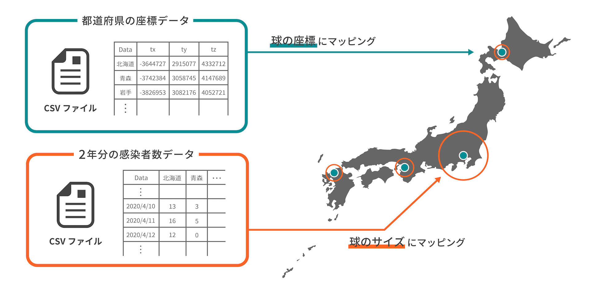
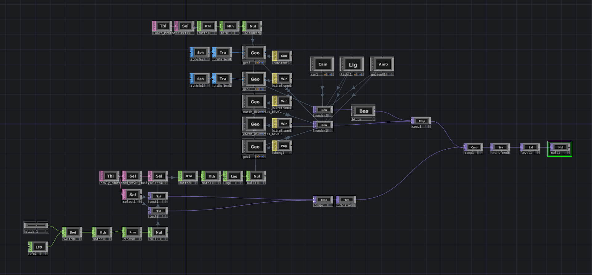
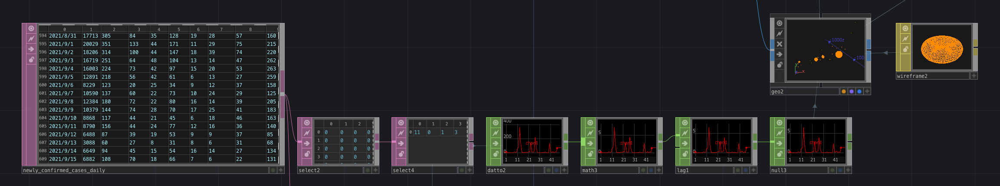
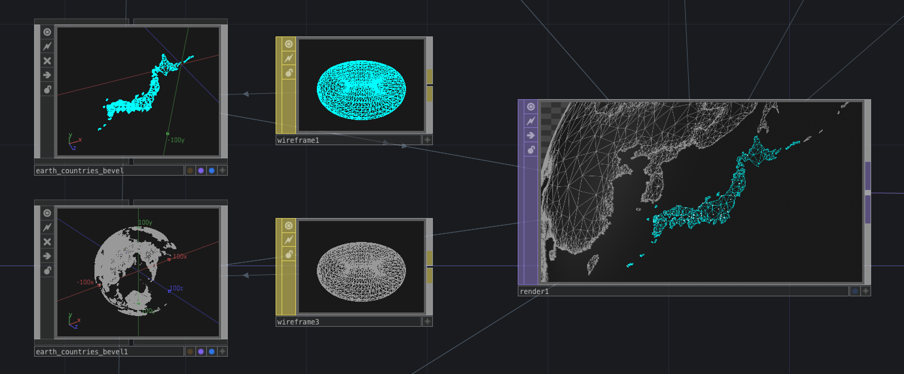

COVID-19 Infographics
新型コロナ感染者数推移の視覚化
個人製作
Dates
2022.01 ~ / 3 days
Tools
Tools : TouchDesigner / Premiere
Overview
日本の2年間（2020.1.16 ~ 2022.1.20）の新型コロナ感染者数推移を視覚化
Background
情報を視覚化するインフォグラフィックスは、数字だけでは伝えられない情報を視覚的に表現することができます。今日では、毎日のように新型コロナウイルスの感染者数が発表されていますが、その状況に慣れて気が緩んでしまっていると言っても否めません。そこで、感染者数の推移を視覚化して、感染力の強さや地域ごとの感染者数の差、第何波と言われる流行はどれほどの規模なのか、1分間の動画でわかりやすく表現しました。
System

Programming
全体図
Instancing
各都道府県の1日の感染者数をグラフ化し、球体のサイズにインスタンシングする。
Geometry
地球の3Dデータから日本だけを抽出してカラーを分ける。
